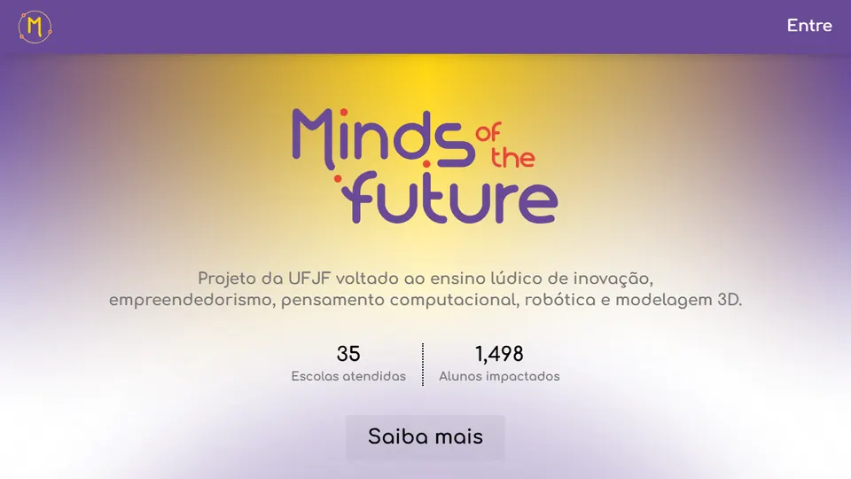

Trabalhos que não são produtos da 3R Studios: projetos feitos na UFJF e sites feitos para clientes.
Na UFJF
O Rafael estuda Ciências Exatas na Universidade Federal de Juiz de Fora e é bolsista do Minds of the Future, projeto de extensão que ensina programação e robótica para alunos de escolas públicas da cidade.

Extensão · Next.js, React e Supabase
Minds Academy
A plataforma de cursos do Minds of the Future. Os alunos fazem cursos de lógica de programação, Scratch, LEGO SPIKE e impressão 3D e recebem certificado no fim. O código é aberto e feito em equipe com outros bolsistas; o Rafael é quem mais contribuiu com ele.
Jogo de tiro em primeira pessoa feito em dupla com o Vinicius para a disciplina de Computação Gráfica. Você explora uma base, junta chaves para abrir as portas e enfrenta monstros inspirados em Doom. Fases, inimigos e colisão foram programados do zero em Three.js e o jogo roda direto no navegador, no computador, com teclado e mouse.
A Fundação Maria Mãe acolhe pessoas em situação de rua em Juiz de Fora desde 1983. O Rafael auditou o site e o redesenhou com um tema próprio, mantendo a logo, as cores e as fotos reais da obra. Agora a primeira tela mostra como doar e como ser voluntário, a chave PIX tem botão de copiar, o contato traz endereço, WhatsApp e horário, e os links compartilhados saem com foto e descrição.
Medição do Lighthouse no celular, antes e depois do redesenho: